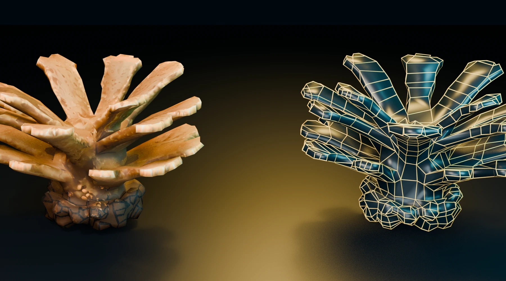
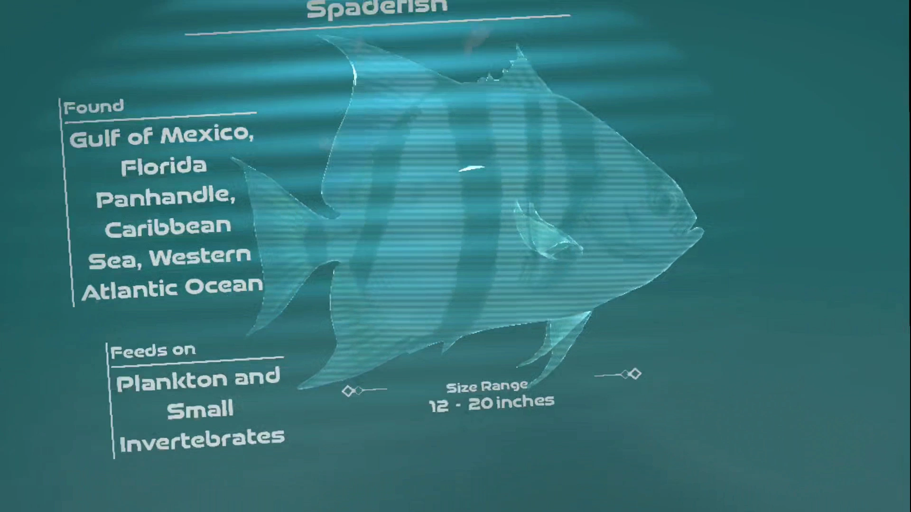
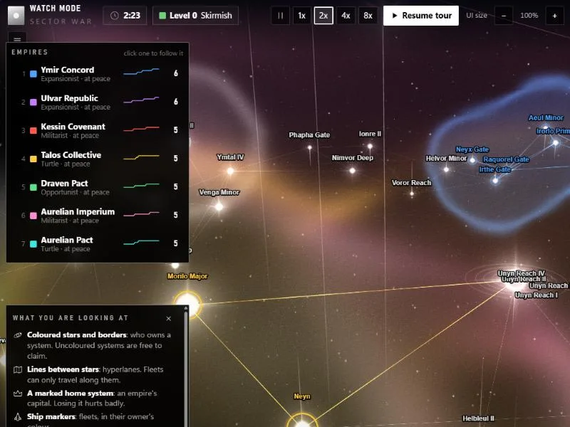
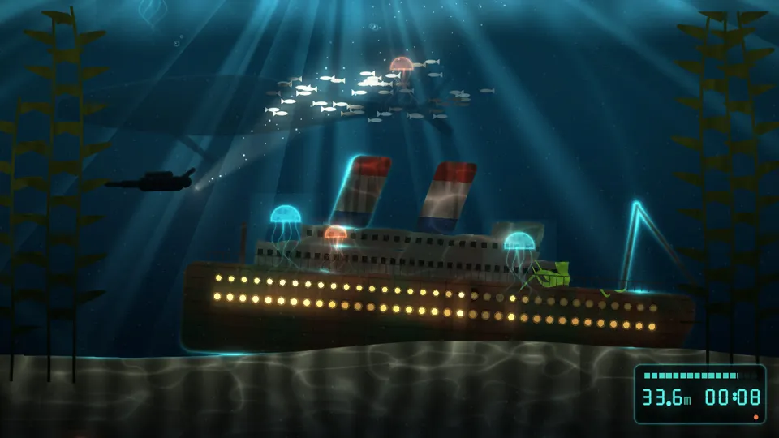
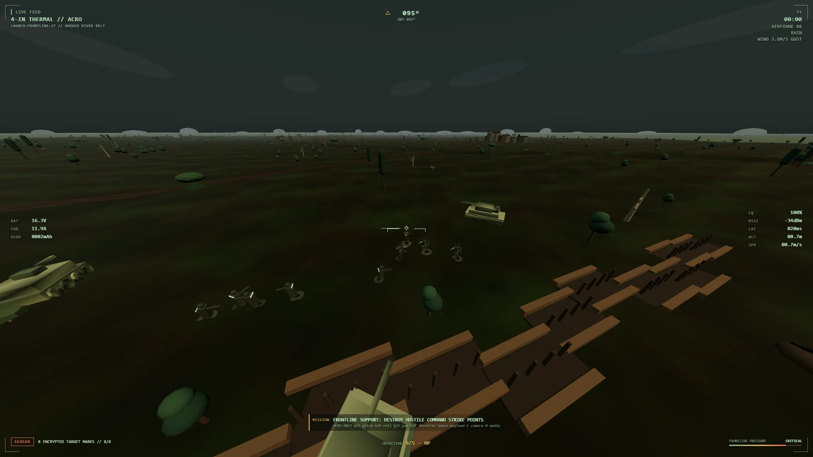
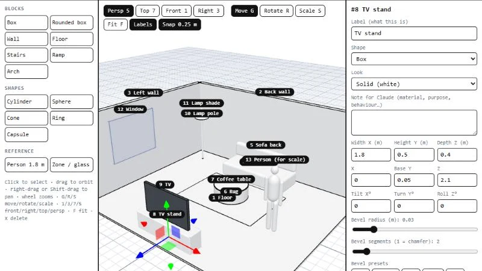
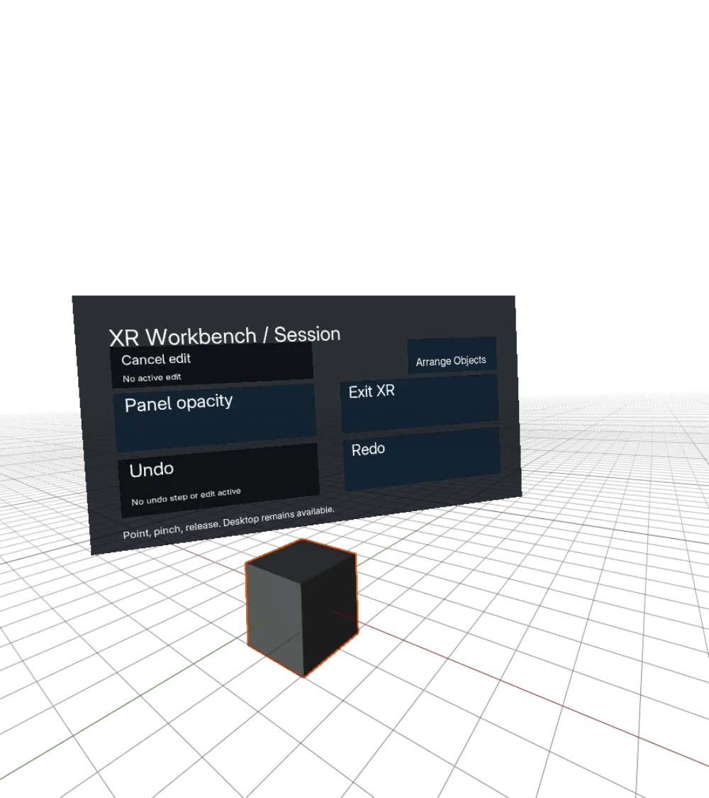
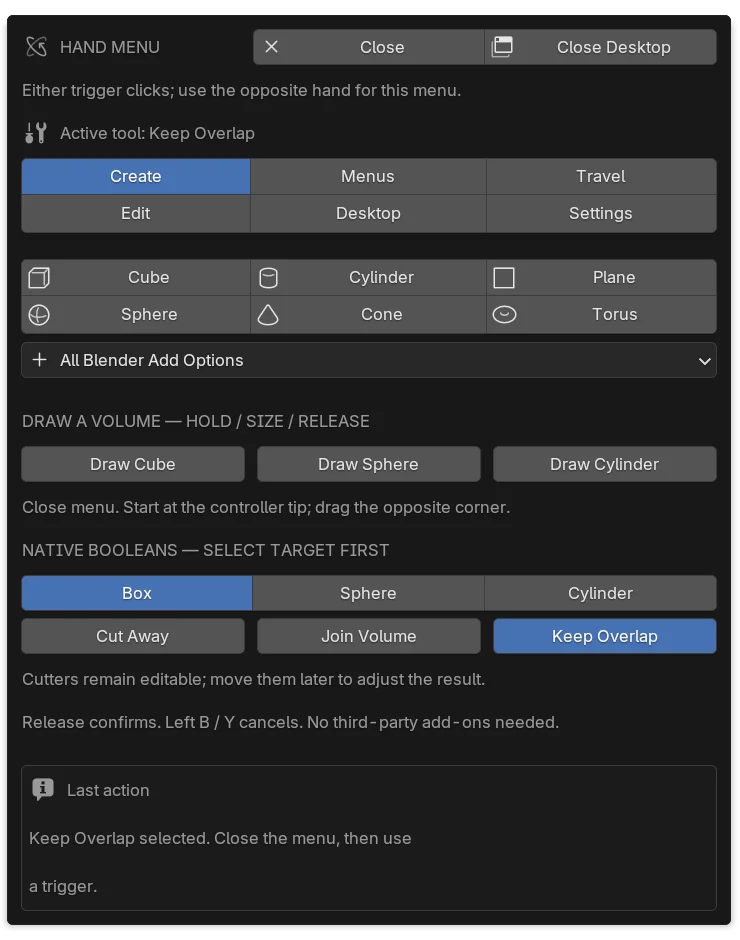
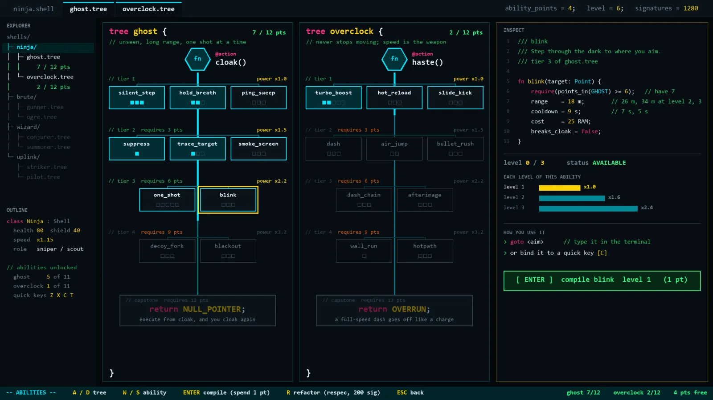

Shipwreck Discovery Aquarium
A live wallpaper I made from the game's own reef, wreck and creatures. The fish react to music and to your mouse: move fast to scare them, hold still and the curious ones come over, click to drop food.
Game developer and 3D technical artist at AquaticXR. I build VR gameplay and real-time art for Shipwreck Discovery, in Early Access on Steam and Meta Quest.
This is the Professional view. for an underwater version with a depth gauge.You're in Dive mode: scroll to descend.
A VR diving game set on real wrecks sunk as artificial reefs off Destin, Florida. I work on it full-time at AquaticXR, on gameplay systems and the real-time art pipeline, and I'm credited as a developer on its Steam page alongside Scott Gonnello and Ian McLennan.
Steam Meta Quest Official site
Published by Lionfish Central, Inc. The source code is private.


A pixel-art arcade game for Android and iOS. Lionfish have taken the reef; you dive in, spear them and bring the reef back across ten ocean habitats.

Real-time space strategy in the browser: the pace of an .io game with a slimmed-down grand-strategy layer. You never leave the galaxy view.
Things I've built that you can try right now, no install.
A live wallpaper I made from the game's own reef, wreck and creatures. The fish react to music and to your mouse: move fast to scare them, hold still and the curious ones come over, click to drop food.

Play in a new tabTen GPU shader worlds that react to your music. It asks to hear your audio: pick the tab or screen that's playing and tick "Share audio". Press M for mouse control.

Play in a new tabAn FPV drone sim in Three.js with a rate-mode flight model, a generated frontline and air defence that shoots back. Keyboard or gamepad.
My real-time space strategy game, the whole thing in one file. Start a quick game against AI empires, or press "Watch the AI play".

Open in a new tabA grid-paper design tool for explaining ideas to AI. Sketch a website layout in 2D or block out a room or game level in 3D, label everything, and export a picture plus a written description Claude can build from.
Blender 5.1 inside PC VR. Hold a trigger to draw a box, sphere, cylinder or Boolean cutter at the controller tip, release to commit. The hand menu stays on the hand that opened it, and every tool runs on Blender's own APIs, so no paid add-ons are needed.


I write Blender add-ons in Python for the jobs I keep doing by hand: remeshing, edge loops and texture layers.
Ten GPU shader worlds that react to every part of whatever's playing: the kick, the snare, the hi-hats, the tempo and the drop. It lives in the Windows tray, and the same shaders run in the browser and a Chrome extension.
A VR shooter set inside a computer, in pre-production. You're a freshly booted antivirus process. Every kill unlocks admin commands you type on a wrist terminal to spawn turrets, walls and vehicles in a destructible procedural city.

I make trailers and shorts for the studio's games, like the Lionfish Reef Heroes trailer. The Shipwreck Discovery shorts come out of a pipeline I built: Claude Opus 5.5 drives Blender to build, animate and render the shots, ElevenLabs voices the narration, and I direct and cut them. I also run the studio's YouTube channel: it started in September 2026 and passed 18,800 views in its first five weeks.
I run CurioCrafter on YouTube with my family: AI-made shorts that we write, pick and edit by hand. It has 94.5 million views and 88,000 subscribers (October 2026).
Making things for a feed taught me what holds a stranger in the first two seconds. I bring that to game feel, onboarding and trailers.
AquaticXR · Full-time, remote
Shipwreck Discovery: VR gameplay in Godot and OpenXR, coral and shipwreck assets from retopology to GLB, regression tests for VR fixes, trailers, shorts and the studio's YouTube channel. Also Lionfish Reef Heroes.
CurioCrafter
My own games (Sector War, Admin Rights), Blender add-ons, a desktop music visualizer, and a family YouTube channel with 94.5 million views.
Malm Electrical Contractors, Longmont, CO · Productive Electric LLC, Englewood, CO
Commercial electrical work, including a school build, with jobsite safety and field troubleshooting.
Trapper Creek Job Corps CCC, Darby, MT
Electrical pre-apprenticeship training and a season on a wildland firefighting crew.
Toolkit Godot 4 · GDScript · OpenXR · Python · Blender API · TypeScript · Three.js · WebGL · C++ · Git
How I work I design, review and test everything I ship, and I use AI coding agents to move faster: ChatGPT Codex on earlier work like Lionfish Reef Heroes and the Claude Citizen Solar Atlas, and Claude Opus 5.5 since it came out, including on Sector War, Admin Rights and VRBlender.